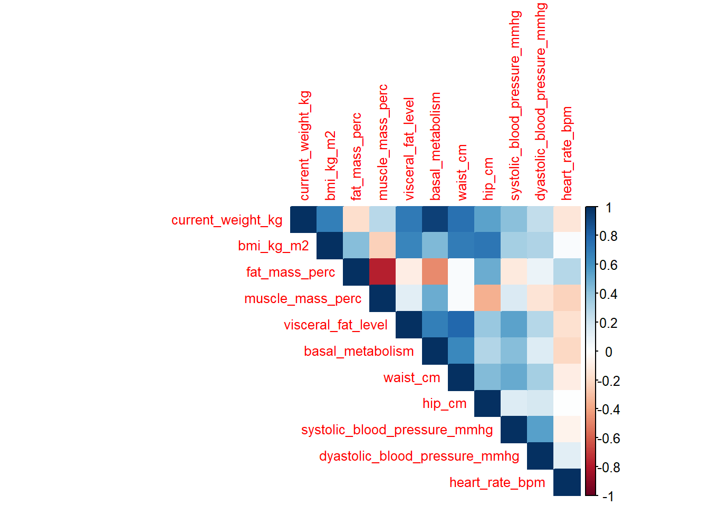
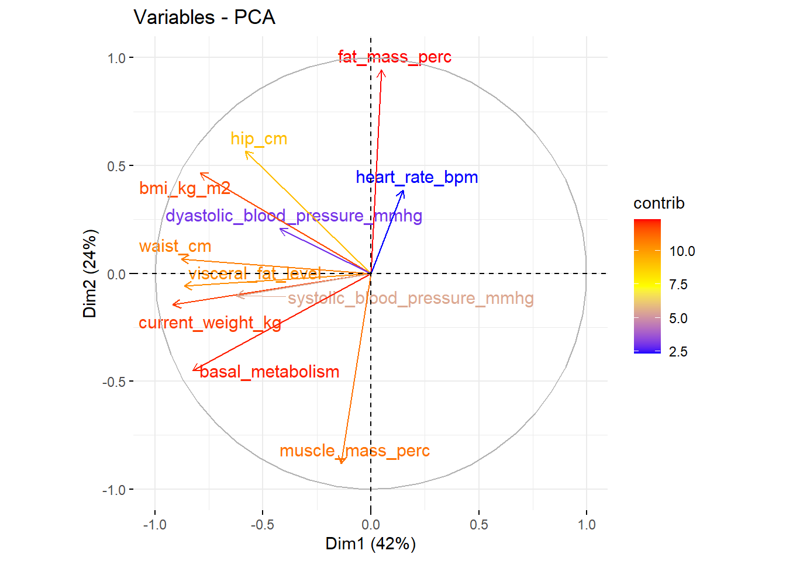
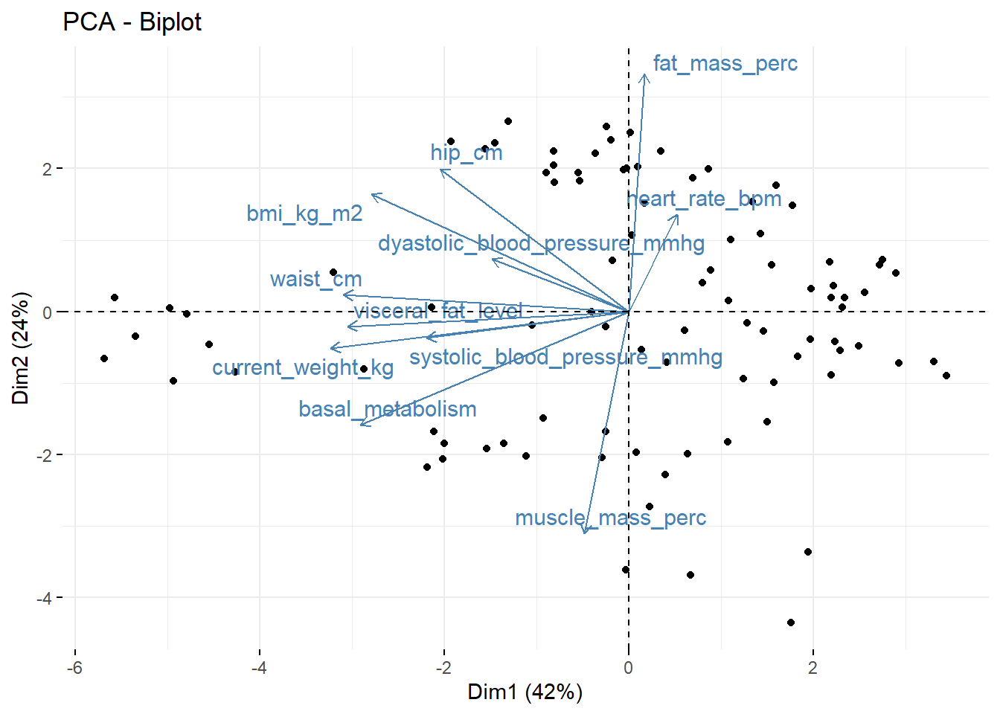

Principal Component Analysis (PCA) is a multivariate statistical method designed to transform a set of possibly correlated variables into a new set of orthogonal (uncorrelated) variables called principal components. Each principal component represents a linear combination of the original variables and is constructed in such a way that it captures as much of the total variance in the data as possible. The first principal component accounts for the maximum amount of variability, the second captures the next highest amount under the constraint of being orthogonal to the first, and so on.
The primary purpose of PCA is dimensionality reduction: by retaining only the first few components, one can approximate the original data while minimizing information loss. This facilitates visualization, pattern recognition, and noise reduction, especially in high-dimensional datasets where interpretation is otherwise difficult. The method assumes that the most meaningful structure of the data lies in the directions of greatest variance, thus replacing the original coordinate system with one defined by these new axes of variation.
Mathematically, PCA can be obtained through the eigendecomposition of the covariance or correlation matrix of the variables, or equivalently through singular value decomposition of the data matrix. The resulting eigenvalues indicate the amount of variance explained by each component, and the corresponding eigenvectors define the loadings that relate components to the original variables. Interpreting PCA typically involves analyzing the loadings to understand which variables contribute most to each component, and the scores to explore how observations are positioned within the new reduced space.
In applied research, PCA serves as both an exploratory and a preprocessing tool. It reveals latent structures, mitigates multicollinearity, and prepares data for further modeling. As Jolliffe (2002) notes, PCA is not only a method of reduction but also a lens through which the essential geometry of multivariate data becomes interpretable.
Reference:
Jolliffe, I. T. (2002). Principal Component Analysis (2nd ed.). Springer Series in Statistics.
9.2 Example
This document performs a Principal Component Analysis (PCA) on the combined data from the anthropometrics.csv and vital_signs.csv files (only visit == 3), as requested. It includes:
Correlation matrix.
Standardization of variables (explanation and effect).
PCA calculation and extraction of eigenvalues.
Scree plot.
Correlation circle (variables on the plane of the first two components).
Biplot (individuals and variables).
Correlation plots between each variable and the principal components.
The tables with the eigenvalues and the proportion of variance explained are shown at the end.
Note: Adjust the file paths if your project uses a different location. The code here assumes that the CSV files are in C:/Users/UIB/Downloads/AI4FoodDB/... as in your example.
9.3 0. Data loading and creation of the Total object
anthropometrics <-read_csv("C:/Users/UIB/Downloads/AI4FoodDB/DS1_AnthropometricMeasurements/anthropometrics.csv")vital_signs <-read_csv("C:/Users/UIB/Downloads/AI4FoodDB/DS6_VitalSigns/vital_signs.csv")Total <- anthropometrics %>%left_join(vital_signs, by =c("id", "visit")) %>%filter(visit ==3) %>%na.omit()# Conservamos id por separado y preparamos la matriz para PCAids <- Total$idTotal_pca <- Total %>%select(-id, -visit, -period) # quitar identificadores# Comprobar dimensionescat("Dimensiones (filas, columnas):", dim(Total_pca)[1], ",", dim(Total_pca)[2], "\n")
Dimensiones (filas, columnas): 92 , 11
9.4 1. Correlation matrix
# Matriz de correlación (usar solo variables numéricas)num_vars <- Total_pca %>%select(where(is.numeric))cor_mat <-cor(num_vars)# Mostrar la matriz (tabla reducida si es grande)kable(round(cor_mat, 3), caption ="Matriz de correlaciones (solo numéricas)")
Matriz de correlaciones (solo numéricas)
current_weight_kg
bmi_kg_m2
fat_mass_perc
muscle_mass_perc
visceral_fat_level
basal_metabolism
waist_cm
hip_cm
systolic_blood_pressure_mmhg
dyastolic_blood_pressure_mmhg
heart_rate_bpm
current_weight_kg
1.000
0.682
-0.177
0.271
0.702
0.932
0.749
0.537
0.416
0.249
-0.139
bmi_kg_m2
0.682
1.000
0.426
-0.231
0.653
0.442
0.694
0.722
0.335
0.305
0.027
fat_mass_perc
-0.177
0.426
1.000
-0.779
-0.095
-0.474
0.030
0.492
-0.116
0.081
0.288
muscle_mass_perc
0.271
-0.231
-0.779
1.000
0.122
0.497
0.025
-0.353
0.152
-0.148
-0.226
visceral_fat_level
0.702
0.653
-0.095
0.122
1.000
0.681
0.788
0.374
0.535
0.283
-0.163
basal_metabolism
0.932
0.442
-0.474
0.497
0.681
1.000
0.650
0.293
0.427
0.148
-0.207
waist_cm
0.749
0.694
0.030
0.025
0.788
0.650
1.000
0.437
0.500
0.334
-0.094
hip_cm
0.537
0.722
0.492
-0.353
0.374
0.293
0.437
1.000
0.145
0.173
0.001
systolic_blood_pressure_mmhg
0.416
0.335
-0.116
0.152
0.535
0.427
0.500
0.145
1.000
0.540
-0.066
dyastolic_blood_pressure_mmhg
0.249
0.305
0.081
-0.148
0.283
0.148
0.334
0.173
0.540
1.000
0.121
heart_rate_bpm
-0.139
0.027
0.288
-0.226
-0.163
-0.207
-0.094
0.001
-0.066
0.121
1.000
# Gráfico de corrplotcorrplot::corrplot(cor_mat, method ="color", type ="upper", tl.cex =0.8)

Quick Explanation: The correlation matrix shows the linear relationship between pairs of variables (-1 to 1). In PCA, this helps to identify redundancies and strongly correlated variables that influence the components.
9.5 2. Data Standardization
# En PCA se suele estandarizar (media 0, sd 1) cuando las variables están en distintas escalasscaled_data <-scale(num_vars)
What standardization does and why:
Standardizing (subtracting the mean and dividing by the standard deviation) places all variables on the same scale. Without standardization, variables with large units (e.g., weight in grams) will dominate the principal components simply because of their scale. With scale(), each variable contributes according to its correlation, not its magnitude.
9.6 3. PCA and Eigenvalue Extraction
# Usaremos prcomp con centered = TRUE y scale. = FALSE porque ya estandarizamospca_res <-prcomp(scaled_data, center =TRUE, scale. =FALSE)# Autovalores: para prcomp, las sdev^2 son los eigenvalueseigenvalues <- (pca_res$sdev)^2var_explained <- eigenvalues /sum(eigenvalues)eigen_table <-tibble(PC =paste0("PC", 1:length(eigenvalues)),Eigenvalue =round(eigenvalues, 4),Variance =round(var_explained, 4),`Cumulative variance`=round(cumsum(var_explained), 4))kable(eigen_table, caption ="Valores propios (autovalues) y varianza explicada")
Valores propios (autovalues) y varianza explicada
PC
Eigenvalue
Variance
Cumulative variance
PC1
4.6175
0.4198
0.4198
PC2
2.6415
0.2401
0.6599
PC3
1.2381
0.1126
0.7725
PC4
0.8604
0.0782
0.8507
PC5
0.5131
0.0466
0.8973
PC6
0.3885
0.0353
0.9326
PC7
0.2564
0.0233
0.9560
PC8
0.2143
0.0195
0.9754
PC9
0.1673
0.0152
0.9906
PC10
0.0933
0.0085
0.9991
PC11
0.0096
0.0009
1.0000
Eigenvalues indicate the variance captured by each component. A rule of thumb (Kaiser) suggests keeping components with eigenvalues greater than 1 when performing PCA on the correlation matrix.
Interpretation: The graph shows the variance (in %) explained by each component. Look for the “elbow” or use the cumulative variance to decide how many components to retain.
9.8 5. Circle of Correlations (Variables)
# Usando factoextra para el círculo de correlacionesfviz_pca_var(pca_res,col.var ="contrib", # color por contribucióngradient.cols =c("blue", "yellow", "red"),repel =TRUE,labelsize =4)

What it shows: Each vector represents the correlation between the original variable and its components. Long vectors and those close to the perimeter have a high correlation with the components; vectors close to the X or Y axis are primarily correlated with PC1 or PC2.
9.9 6. Biplot of variables and individuals
# Biplot con factoextrafviz_pca_biplot(pca_res, repel =TRUE, label ="var", addEllipses =FALSE)

# Si quieres ver individuos etiquetados por idind_coords <-as.data.frame(pca_res$x) %>%mutate(id = ids)knitr::kable(head(ind_coords), caption ="Coordenadas de los primeros individuos en el espacio de PC")
Coordenadas de los primeros individuos en el espacio de PC
PC1
PC2
PC3
PC4
PC5
PC6
PC7
PC8
PC9
PC10
PC11
id
-1.5401359
-1.9131536
-0.0344751
0.1928440
0.1762209
0.4407151
0.4673128
-0.1282716
-0.2597347
0.0769033
-0.0963708
A4F_10021
-0.2509518
-0.2057822
-0.9151979
0.2166586
-0.3115131
0.3785732
-0.8326386
-0.0830880
0.4746012
-0.1547623
-0.1198479
A4F_10141
1.9722411
0.3200554
2.8509748
0.3617572
-0.9454229
0.3223597
0.4048971
-0.2190433
-0.4905496
-0.0574429
-0.0353668
A4F_10355
-0.0312034
-3.6068621
-0.2228999
0.0622806
1.4382317
0.1154289
-0.3118100
0.5411452
0.3253870
-0.3754036
0.0318862
A4F_10660
-2.1811906
-2.1808570
-0.5420183
0.7819907
-1.1832932
1.2032446
-0.1709386
0.2185507
-0.5299048
0.0519529
-0.2068859
A4F_10709
-2.1365103
0.0618556
-0.2218383
-0.5944327
1.2803436
0.1415652
-0.6171622
-0.9103554
-0.3581852
-0.2886566
-0.1312384
A4F_13368
9.10 7. Correlation between variables and principal components
var <-get_pca_var(pca_res)corrplot(var$cos2[,1:11], is.corr=FALSE)